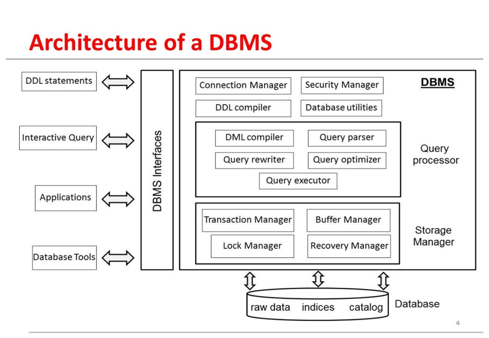

What is a Database System?
A database is an organised collection of data that can be stored, managed, retrieved and updated efficiently. A database system includes the database itself together with the software and processes used to manage the data.
A DBMS is software that allows users and applications to create, store, retrieve, update and manage data within databases.
Key Features
- Structured storage of information
- Efficient data retrieval
- Data updating and modification
- Access control and security
- Data consistency and integrity
- Support for multiple users and applications
Advantages
- Centralised organisation of information.
- Faster searching and retrieval of data.
- Better control over data access.
- Improved data consistency.
- Information can support organisational decision-making.
Limitations and Challenges
- Database systems can be complex to design and maintain.
- Organisations may need trained database professionals.
- Security vulnerabilities can expose sensitive information.
- Hardware, software and maintenance can create costs.
- Poorly designed databases can lead to inefficient queries and inconsistent information.
Database Technologies
| Technology | General Use | Example Data |
|---|---|---|
| Relational Database | Structured data using tables | Customer records |
| NoSQL Database | Flexible or large-scale data | Documents and user activity |
| Cloud Database | Database services hosted in cloud environments | Online application data |
| Data Warehouse | Analysis and reporting | Business analytics |
Database Systems in the Workplace
Organisations use databases to support many different business processes. Examples include customer management, employee records, inventory management, financial transactions and reporting.

Modern organisations depend on reliable information. Database systems provide a structured way to store and retrieve information so that people and software applications can use it.
Learning Interest Form
This is a non-functional HTML form for the project.